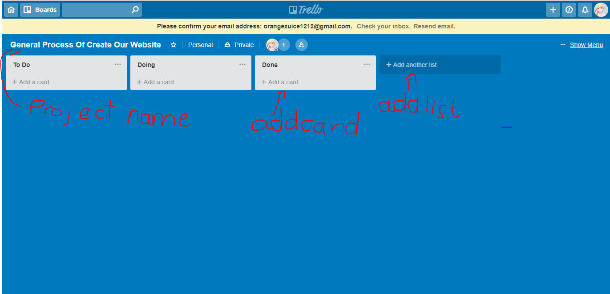
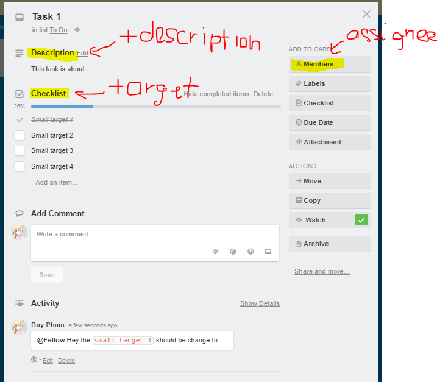

Chapter 1: Introduction + Course Essentials
Why this Course and Course plan
Overview:
Understand the purpose of taking this course and give out the course plan
Details:
Top 5 reasons:
Technology are introduced along with practical projects
Step by step lead you from exporting elements of Photoshop Design till you Deliver a full working responsive production website to client (the combination of design and coding is very usual in big companies)
Concern testing and optimization.
The testing includes:
- Cross browser test
- Markup validation service
- Speed and performance test
Enhancements includes:
- Responsive test
- Compressing images
Provide three different stunning website in one course with different ideas and carefully chosen design.
Simplify the knowledges of technologies used and combine them.
Course planning:
Adobe Photoshop:
- How to use to export elements to psd files
- How to get the colors and fonts of your website
- Tools that front-end developers/designer should know
- How to control layers and useful shorcuts
Bootstrap 4:
- Introduce Bootstrap 4 grid system by examples
- How to use components like navbar, cards, forms, dropdown, scroll spy and more
- Further explanation of the most common bootstrap 4 classes
CSS Preprocessors SASS and LESS
- Full explanation about preprocessors by examples
- Definition and why use them ?
- Different between SASS and LESS
- How to install
- Features of SASS and LESS by examples
Trello Project Manager
- What is Trello
- Why we use it
- How we can use it to organize our project steps and keep the clients aware of the project progress
The Open Charity website
- How to prepare website files
- Write clean and reusable code with comments for every section
- Use LESS in our style sheet
- Use some of the bootstrap components
- How to make scroll spy as well as smooth scroll
- Write some jQuery animations
- User a plugin called owl slider to make two different sliders and how to customize your slider easily
- Use animated.css to animate some elements
- Check the responsive plus optimize the website speed and performance and run three different tests on website
The 404-penguins page
- Learn how to make advanced css keyframes and animations plus positioning
Merkury Website
- Go over some of subjects that we have learned in the past projects
- Learn how to make advanced animations with css keyframes and jQuery
- Use bootstrap 4 ultility classes
- Use CSS before and after selectors
- How to combine between bootstrap 4 cards dropdown and customize them
- Learn how to use jQuery UI library to apply advanced events on elements
- Learn how to use scroll reveal plugin to animate elements while scrolling
- Finding solutions and workarounds and more
- Check responsive and optimize website performance and speed along with running test on website
Bookmarks: None
Editor
Overview:
Introduce VS Code Editor
Details:
Customize setting: File/Preference/Settings a tab appear to let you put on your own style
VS Code comes with built-in terminal, (expand from the bottom)
Install the following package for compling preprocessors SASS and LESS
Ctrl + Shift + X to open Extensions
Search and install Easy LESS(compile LESS to CSS on save), Live SASS compiler(compile SASS or SCSS to CSS, come with live server to support hot reloading), Sass (Sass syntax highlighting, autocomplete and snipets)
Install Dracula Theme through Extensions.
Bookmarks: Download and Documentation VSCode
Adobe Photoshop Essentials
Overview:
Adobe Photoshop Essentials
Details:
Image Exporting program that help to convert PSD to HTML and CSS: Figma, Gravit, Photoshop, ...
Explain some common used tools of Photoshop with examples
The left sidebar
Select tool/Move tool(V): Select elements and export it
Marquee tool(M): Makes rectangular, elliptical, single row and single column selections
Crop tool(C): Trim, straighten, and change the perspective of images
Eyedropper tool(I): Inspect color
Horizontal Type tool(T): Create text, edit or delete it, get font-size, font-family
Hand tool(H): Move image
Zoom tool(H): Zoom in, Zoom out
Some useful shorcuts:
Zoom(Alt + Scroll): Zoom in and out
Step Back(Ctrl + Alt + Z ): Traverse history
More details in Bookmarks
Change unit to pixels: Edit/Preference/General or Ctrl + K then choose Units and Rulers. Change the Rulers.
Extract some components from template:
Single component
Create new file: Ctrl N
Use Move Tool to drag and drop the component onto that files
Make background transparent
User crop tool to extract the component then export to PNG
Multiple component
Hold Ctrl select multiple component
Click
Create new groupunder Layers panelExport as PNG
The usage of Zoom tool, Text tool, and Hand tool are pretty straight-forward
History panel: Open history panel by click on Window/History.
Bookmarks: 60 useful shorcuts in Photoshop
Bootstrap 4
Overview:
Discuss some of the neccessary and most used bootstrap components and ultilities
Details:
About library itself
Bootstrap is an open source toolkit for developing with HTML, CSS and Javascript
Bootstrap includes HTML and CSS based design templates for typographic, form buttons, table, navigation, model, image carousels and many others as well as optional javascript plugins
Bootstrap is used to build responsive mobile first projects on the web with world's most popular front-end component library
Why use Bootstrap ?
- Easy to Use
- Responsiveness
- The Speed of the Development
- Customizable (open-source)
- Consistency
- Big community, great support
- Simple Integration
- Grid system
Explain more in the Bookmarks
Most important to learn about bootstrap
Grid System
Grid System use a series of container row and column to layout and align content, it's built with flexbox and fully responsive
Flexbox was designed as one dimensional layout model and as a method that could offer space distribution between items in an interface
Bootstrap grid system consists of
container,container fluid(span the entire width of viewport),rowsandcolumn

Components
Button
Classes:
btn btn-primarybtn btn-secondarybtn btn-successbtn btn-dangerbtn btn-warningbtn btn-infobtn btn-lightbtn btn-dark
Card
Classes:
card>card-img-topcard-bodycard-titlecard-text
Dropdown
Classes:
dropdowndropdown-toggledropdown-menudropdown-itemVisual Example Important components: cards, drop down, forms, nav bar, scrollbar
Form
Custom Form
Classes:
form-groupform-control
Inline Form
Classes:
form-inlineform-groupform-controlVisual Example Bookmarks:
Note:
<input>and<label>should be put inside form-groupNote: You will notice some mysterious classes like
mb-2mx-sm-3, they are spacing classes(ultilities class). Check it out in BookmarksNote: Form in Bootstrap has many variants, see Bookmarks for more
Navbar
Some features:
Navbars and their contents are fluid by default. Use optional containers to limit their horizontal width.
Use our spacing and flex utility classes for controlling spacing and alignment within navbars.
Navbars require a wrapping .navbar with .navbar-expand{-sm|-md|-lg|-xl} for responsive collapsing and color scheme classes.
Supported content:
.navbar-brand.navbar-nav.navbar-toggler.form-inline.navbar-text.collapse.navbar-collapse(Detail in Bookmarks)
Scrollspy
Features: Automatically update Bootstrap navigation or list group components based on scroll position to indicate which link is currently active in the viewport.
Ultilities ( Link to details of Bootstrap Ultilities in Bookmarks)
Colors
Classes:
*-primary*-secondary*-success*-danger*-warning*-info*-light*-dark*-whiteNote Replace * with
textorbg
Float
Features: Works like its name suggest
Classes:
float-leftfloat-rightfloat-none
Position
Features: An alternative to
positionCSS propertyClasses:
position-static/relative/absolute/fixed/sticky
Shadow
Features: An alternative to
box-shadowCSS propertyClasses:
shadowshadow-none/sm/lg
Spacing
- If you got here, you may have checked out the Spacing reference link in the Bookmarks section, so i won't recall.
Text
Features: Documentation and examples for common text utilities to control alignment, wrapping, weight, and more.
Classes:
Alignment with
text-lefttext-righttext-centertext-justifyText wrapping and overflow with
text-nowraptext-truncateText transform with
text-lowercasetext-uppercasetext-capitalizeFont weight and italics with
font-weight-boldfont-weight-normalfont-weight-lightfont-italic
Vertical Alignment
Features: Easily change the vertical alignment of inline, inline-block, inline-table, and table cell elements.
Classes:
align-baselinealign-topalign-middlealign-bottomalign-text-bottomalign-text-topNote These classes are only applied for
inlineandinline-blockelements
Bookmarks:
Why use Bootstrap for amazing web design
Preprocessors SASS vs LESS
Overview:
Find out what is SASS and LESS, why use them and gave some examples
Details:
What is Preprocessors ?
- It's basically a scripting language that extends CSS and compiled into regular CSS.
Why Go for CSS Preprocessors
CSS is primitive and incomplete. Building a function, reusing a definition or inheritance are hard to achieve. For bigger projects, or complex systems, maintenance is a very big problem.
CSS preprocessor is DRY(Don't Repeat Yourself), Not WET(Write It Twice)
Aids in Modularization and Portability
Enjoy the Power of Code Reuse
More Organized
Easy to Write
Easy to Setup and Maintain
Difference between SASS and LESS
| SASS | LESS |
|---|---|
| Built on Ruby | Built on Javascript |
| Better Error messenger | |
| Documentation is much more of a knowledge-based wiki sheet | More User-friendly documentation |
How to install
With SASS: yarn global add sass
With LESS: yarn global add less
- Install compiler
- VSCode: Install Easy Less, Live Sass Compiler
- Atom: Install
yarn global add node-sass,apm install less-autocompile sass-autocompile
You may be confused
Sass vs SCSS
Sass has 2 syntaxes available:
Sass itself (Syntactically Awesome StyleSheets) in .sass files
SCSS (Sassy CSS) in .scss files, which is something halfway between regular CSS and Sass
Remember that:
- Sass is the name of the preprocessor
- SCSS is easier to learn
- All resources on the internet mention Sass, not SCSS
- All features are available for both syntaxes everything in SCSS is available in Sass
- We’re actually going to write SCSS but still call it Sass.
Find out more in the Bookmarks
Features
Link to SASS examples: SASS Example
Link to LESS examples: LESS Example
Variables
Variables were all time wanted feature for CSS. Every developer, wanted to define a base color and use it all over the CSS file, in stead of writing the hex or named color in a property each time
Variables in LESS start with @ and those in SASS start with $, value of variable is assigned with semicolon :-
Mixins
- The idea is you put together some set of css rules to create effect of your own, much like a reuseable css class, it resembles function in other languages
Nesting
- CSS lacks visual hierarchy while working with child selectors.
- Nesting provides a visual hierarchy as in the HTML and increases the readability.
- Note: In some cases, nesting causes oversizing the selectors, so use it wisely.
Extends
Extends are useful for sharing a generic definition with selectors rather than copying it in
SASS extends every instance of extended selector that includes its child selectors and inherited properties
With LESS you can choose to extend only the main instance or all by
extend(.<className> all)
Imports
- Allow you to split one large file into small pieces
There are some other features like Color Operation, If/else Statements, Loops, Math but not covered in the course.
Checkout the Bookmarks for all of them
Bookmarks:
Trello The Project Manager
Overview:
- What is Trello and why it's helpful
- How to use
Details:
What is Trello
Trello is a Project Management Software that use cards to organize tasks and visualize purpose.
Why use Trello ?
Trello can be very helpful if you have more than one project at the same time and you want to organize the time between projects
More than one person can work at the board and you can assign task to members
Keep clients aware of your project progress and the due date
The details of Trello will be explained on real project
How to use
Go to Trello
Sign up a free account and login
Rename the board (to the name of your project may be)
Add some list of task

- Create a card to describe and delegate tasks to members

Bookmarks: